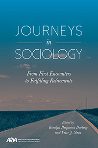

<body bgcolor="#FFFFFF" text="#000000" link="#0000FF" vlink="#CC0000" alink="#CC0000"><center><hr width="350" size="1" align="center" noshade>Twenty-two eminent retired sociologists reflect on their lives and their career choices<hr width="350" size="1" align="center" noshade><p><a href="https://cdcshoppingcart.uchicago.edu/Cart/ChicagoBook.aspx?ISBN=&&PRESS=temple" target="_top">Buy this book!</a> | <a href="https://cdcshoppingcart.uchicago.edu/Cart/Cart.aspx?PRESS=temple" target="_top">View Cart</a> | <a href="https://cdcshoppingcart.uchicago.edu/Cart/Cart.aspx?PRESS=temple" target="_top">Check Out</a></p><p></p></center><!--none//--><h1 class = "booktitle">Journeys in Sociology</h1> <h1 class = "subtitle">From First Encounters to Fulfilling Retirements</h1>
<h3>Edited by Rosalyn Benjamin Darling and Peter J. Stein</h3>
paper: $29.95, May 17<BR>EAN:&nbsp;978-1-4399-1475-5<BR><font color=#990033>Not Yet Published Preorder</FONT><font size=-7><br>&nbsp;</font></p><p class="info">cloth: $99.50, <BR>EAN:&nbsp;978-1-4399-1474-8<BR><font color=#990033>Not Yet Published Preorder</FONT><font size=-7><br>&nbsp;</font></p><p class="info">e-book: $29.95, <BR>EAN:&nbsp;978-1-4399-1476-2<BR><font color=#990033>Not Yet Published Preorder</FONT><font size=-7><br>&nbsp;</font></p></p></td></tr></table>
<BR> <p class="info">264 pp<BR> 6 x 9<BR> 22 halftones <p class="info"><font size=-7>&nbsp;</font></p><p class="info">
</P><BLOCKQUOTE></BLOCKQUOTE>
<p>
For most sociologists, their life's work does not end with retirement. Many professors and practitioners continue to teach, publish, or explore related activities after leaving academia. They also connect with others in the field to lessen the isolation they sometimes feel outside the ivory tower or an applied work setting.
<br /><i>
<br /></i>The editors and twenty contributors to the essential anthology <i>Journeys in Sociology </i>use a life-course perspective to address the role of sociology in their lives. The power of their personal experiences-during the Great Depression, World War II, or the student protests and social movements in the 1960s and ‘70s-magnify how and why social change prompted these men and women to study sociology. Moreover, all of the contributors include a discussion of their activities in retirement. <br>
<p>From Bob Perrucci, Tuck Green, and Wendell Bell, who write about issues of class, to Debra Kaufman and Elinore Lurie, who explain how gender played a role in their careers, the diverse entries in <i>Journeys in Sociology</i> provide a fascinating look at both the influence of their lives on the discipline and the discipline on these sociologists' lives.
<br /><i>
<br />Contributors include: David J. Armor, Wendell Bell, Glen H. Elder, Jr., Henry W. Fischer, Janet Zollinger Giele, Charles S. (Tuck) Green, Peter Mandel Hall, Elizabeth Higginbotham, Debra Renee Kaufman, Corinne Kirchner, Elinore E. Lurie, Gary T. Marx, Robert Perrucci, Fred Pincus, Thomas Scheff, Arthur Shostak, David Simon, Natalie J. Sokoloff, Edward Tiryakian, Joyce E. Williams, and the editors</i>
<br>
<P CLASS="top"><A HREF="#top">BACK TO TOP</A></P>&nbsp;
<BR>&nbsp;
&nbsp;<P>
</P><BR>&nbsp;
<H2 class="inpageheading"><A NAME="author bio"></a>About the Author(s)</H2><p>
<b>Rosalyn Benjamin Darling</b> is Professor Emerita, Indiana University of Pennsylvania and Visiting Scholar, University of North Carolina-Chapel Hill, and the author of ten books including <i>Disability and Identity: Negotiating Self in a Changing Society</i>.
<br>
<p>
<b>Peter J. Stein </b>is Professor Emeritus,&nbsp;William Paterson University and Senior Researcher at the University of North Carolina Institute on Aging. He is the editor of <i>The Forum on North Carolina's Aging Workforce</i>, and co-author, with Elizabeth Markson, of <i>Social Gerontology: Issues and Prospects</i>.
<br>
<P CLASS="top"><A HREF="#top">BACK TO TOP</A></P>
<p><h2 class="inpageheading"><A NAME="subjects"></a>Subject Categories</h2><P><A HREF="/tempress/aging.html" TARGET="_top">Aging</a><BR><P><A HREF="/tempress/labor.html" TARGET="_top">Labor Studies and Work</a><BR><P><A HREF="/tempress/sociology.html" TARGET="_top">Sociology</a></P></P>
</p>
<P>
</P>
<p align="center"><a href="https://cdcshoppingcart.uchicago.edu/Cart/ChicagoBook.aspx?ISBN=&&PRESS=temple" target="_top">Buy this book!</a> | <a href="https://cdcshoppingcart.uchicago.edu/Cart/Cart.aspx?PRESS=temple" target="_top">View Cart</a> | <a href="https://cdcshoppingcart.uchicago.edu/Cart/Cart.aspx?PRESS=temple" target="_top">Check Out</a></p><p><font face="Arial" size="1"><a href="copyright.html" onMouseOver="window.status='Web Copyright Policy';return true;" onMouseOut="window.status=''" title="Web Copyright Policy">&copy;</a> 2017 <a href="http://www.temple.edu" target="new" onMouseOver="window.status='Link to Temple University home page';return true;" onMouseOut="window.status=''" title="Link to Temple University home page">Temple University</a>. All Rights Reserved. http://www.temple.edu/tempress/titles/2448_reg.html</font></p>